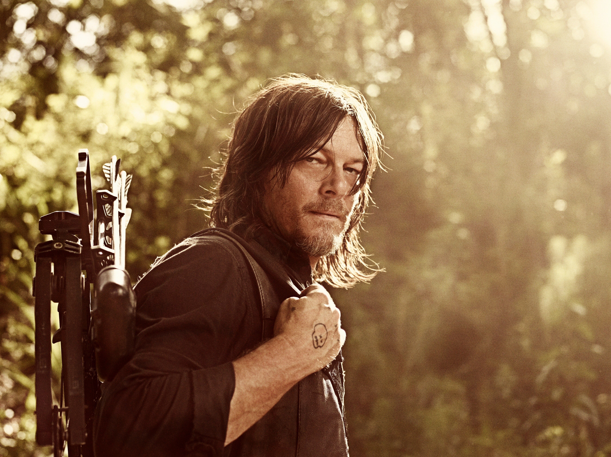

The Walking Dead:
The Walking Dead is an American post-apocalyptic horror drama television series based on the comic book series of the same name by Robert Kirkman, Tony Moore, and Charlie Adlard—together forming the core of The Walking Dead franchise. The series features a large ensemble cast as survivors of a zombie apocalypse trying to stay alive under near-constant threat of attacks from zombies chiefly known as "walkers" by the other characters. With the collapse of modern civilization, these survivors must confront other human survivors who have formed groups and communities with their own sets of laws and morals, sometimes leading to open, hostile conflict between them. The series is the first television series within The Walking Dead franchise.
My Favorite The Walking Dead Characters:
-
Negan Smith:
Negan is one of the main antagonists of The Walking Dead, and one of the two main protagonists in the TV shows' spin off Dead City.
Negan was the totalitarian and magisterial leader of The Saviors, a hostile group of outbreak survivors that are pitted against Rick Grimes' group.
In the series, he is portrayed by Jeffrey Dean Morgan, who also played The Comedian in Watchmen, Abyzou in The Possession, Azazel while possessing John Winchester in Supernatural, and Sam in Desierto.
-
Daryl Dixon:
Living... in Atlanta after the zombie apocalypse. Though really, it’s more surviving than living. He met up with Shane and Rick’s roaming group of survivors after the walkers showed up and has been an invaluable member of the team as a ruthless walker-killer.

Profession... tracker, zombie assassin, and Rick’s right hand man. He’ll hunt for food and shoot every zombie he runs into along the way with his trusty crossbow. Being able to do that gives you a lot of power in this terrifying new world. It’s not long before people start to look to Daryl as a leader, even if he does everything in his power to avoid that responsibility.
Relationship Status... closest with fellow survivor Carol, though they’re not a couple. They’re just close friends who both come from abuse and have each others’ backs. He’s also extremely close with his racist older brother Merle, even though Merle ran away from home as a teenager and left Daryl to survive alone with their abusive, drunk father. He never thought he’d have to dig up those survivalist instincts again but then the apocalypse happened…
Challenge... Merle. Merle doesn’t get along with the rest of the group, which initially puts Daryl at odds with Rick (who handcuffed Merle to a roof and left him). The zombies are lethal, but clashes within the group can be just as deadly. They’re able to resolve their issues and lead the group away from danger, but some people in his camp are just waiting for his aloofness to turn to contempt for the group.
Personality...quiet, intense, and deadly. He keeps his distance from the rest of the group, but doesn’t hesitate to risk his life to save them. And after enough close calls with walkers, and enough times playing the hero, he does begin to soften towards the other survivors. They might be able to depend on him, but he’s less sure that they’ll come through for him. At the end of the day, when times get tough, the only thing he’s going to hold close is his crossbow. -
Rick Grimes:
Living... an idyllic life as the sheriff of Cynthiana, Kentucky. It’s normally a quiet town but one day Rick responds to a call about an armed and dangerous criminal. One wrong move later, and Rick’s full of lead and comatose. When he comes out of his coma, he’s in an abandoned hospital in a world overrun by the living dead.
Profession... de facto leader of a group of survivors of the zombie apocalypse. Rick eventually meets up with his wife Lori, son Carl and former partner Shane. That partnership quickly becomes a relic of their pre-zombie lives when they immediately begin butting heads over how the survivor camp should be run.
Interests… none. There’s no time for hobbies when every waking hour of your life is devoted to protecting your family. Unless brooding counts as an interest, in which case, sure, he spends a lot of time on his interests.
Relationship Status... married to Lori, another lucky survivor camped out in the woods. But Rick was in a coma for quite a long time. While Rick was presumed dead, Lori turned to Shane for emotional support, which eventually turned physical and passionate. It might be tough for her to forget all that just because Rick is back.
Challenge... keeping everybody from dying, or worse, becoming undead. Things are bleak for Grimes and his camp – society has fallen apart, and a cure seems to be out of the question. And with stakes that high, in-fighting is bound to develop among the living. Rick doesn’t just have to protect everyone from the walkers; he has to protect them from themselves too.
Personality...confident, calm, and quiet. He follows his internal moral compass, but in a world overrun with walkers out to feast on human flesh, sometimes morality isn’t enough. And when things don’t go as planned, Rick is hard on himself, perhaps unfairly. In this new, terrifying landscape, every decision has deadly consequences.